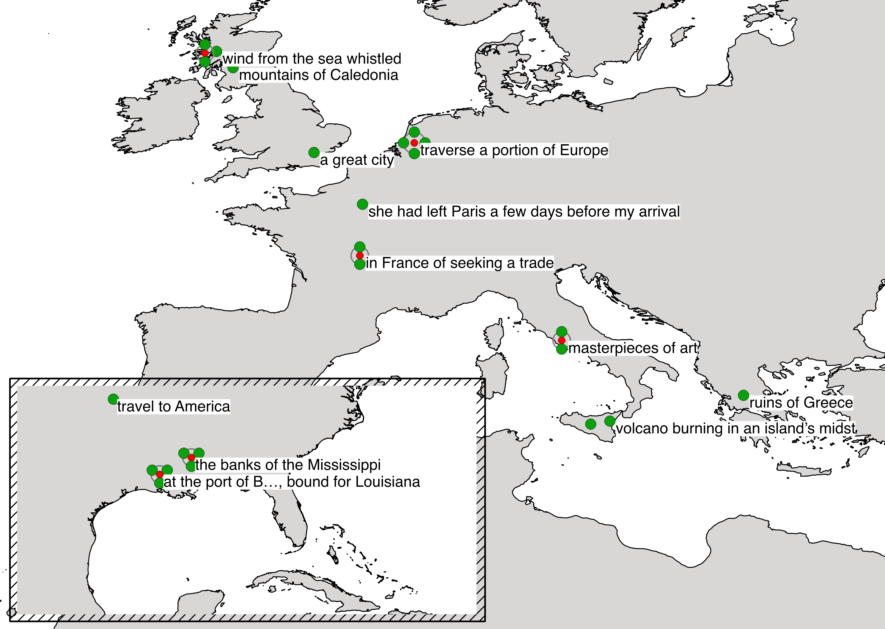

Enlightenment, Revolution, Melancholia
The chapter concentrates on the late eighteenth and early nineteenth centuries and analyzes the ambiguous project of the Enlightenment. The eighteenth century has often been depicted as an era of progress, when new scientific inventions were made and disseminated while the middle class gained more economic and political influence. The 1750s was a turning point, however, after which European intellectual history started to show darker shades and a new sceptical attitude to progress arose. At the end of the century, the Great Revolution of France brought a wave of unrest, wars and, finally, harsh manifestations of political terror. The chapter explores the heritage of the era of revolutions and its impact on the future.
In the article I also analysed sites of Romantic melancholy using Chateaubriand’s René (1802) in an example map that presents the toponyms mentioned in the novel embedded with their textual context:

“… The place names are embedded with their textual contexts to show Chateaubriand’s interpretations of the places. The toponym ‘Europe’ is located around the Netherlands, because, as a region, it cannot be represented with a point, while the American places are on the smaller map. The map shows the way in which the sites of Romantic melancholy are often located on the periphery. René visits the northern parts of Scotland, the location of Ossian (1760), while also climbing Mount Etna in Sicily, combining peripheral places in both the north and south. Rome is also a very typical destination of Romantic narratives, combined with a tour of the Greek ruins. Although Rome can be considered an urban centre, René sees it through its art and history. It is remarkable that in many Romantic narratives, both Italy and Greece are represented as ancient places without any references to their contemporary histories, although Italy was an important battle scene in the Napoleonic Wars and Greece was still part of the Ottoman Empire. René also moves on an exceptionally wide horizontal axis, because its frame narrative is located in the remoteness of Louisiana.”
- Asko Nivala: “Enlightenment, Revolution, Melancholia”, The Routledge Companion to Cultural History in the Western World. Eds. Alessandro Arcangeli, Jörg Rogge and Hannu Salmi. Routledge, Abdingdon 2020.